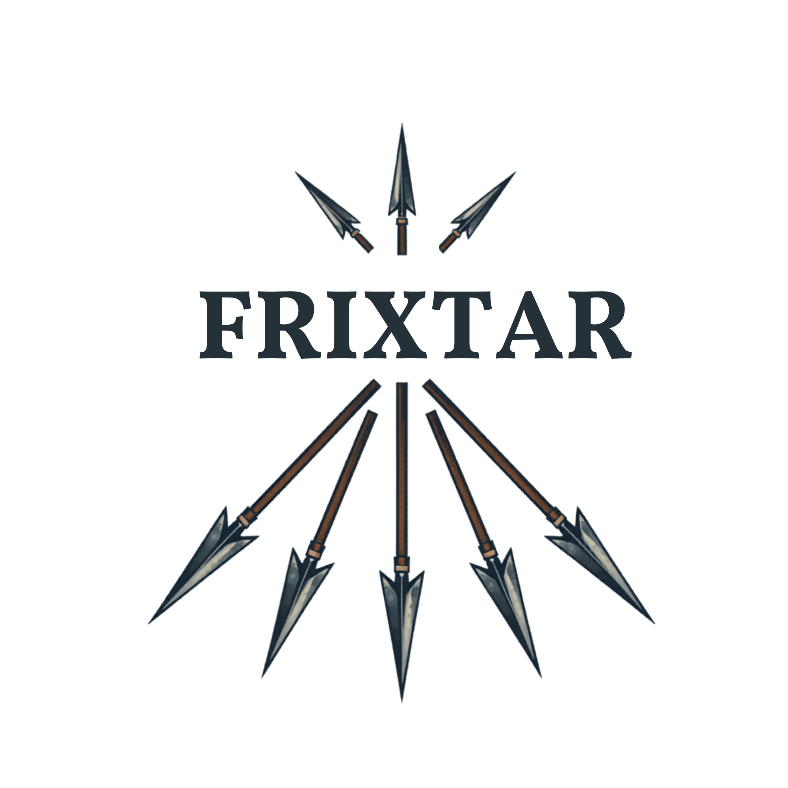

Desarrollador full‑stack & entusiasta de IA.
Soy Zaid Jiménez, desarrollador web basado en Oaxaca de Juárez. Me especializo en crear aplicaciones con impacto real para mi comunidad, integrando Inteligencia Artificial y tecnologías modernas.
He construido plataformas de gestión urbana, aplicaciones de turismo cultural y sistemas de salud comunitaria — siempre con una perspectiva oaxaqueña.

Plataforma de gestión de residuos sólidos para Oaxaca con rastreo GPS en tiempo real, clasificación de basura por IA (Claude Vision) y mapas interactivos para reportes ciudadanos.
Sistema de donación de sangre con panel de administración hospitalaria, alertas de geolocalización, check-in por QR y sistema de recompensas gamificado para donadores.
Aplicación multi-rol para turistas, comercios y curadores. Incluye itinerarios generados por IA, puntos de interés, gastronomía y pueblos mágicos con recomendaciones personalizadas por ubicación.
Tienda en línea completa con carrito de compras, pasarela de pago, gestión de usuarios, login/registro, ventana de ventas y dashboard administrativo.
Estoy abierto a nuevos proyectos, colaboraciones y oportunidades. No dudes en escribirme.